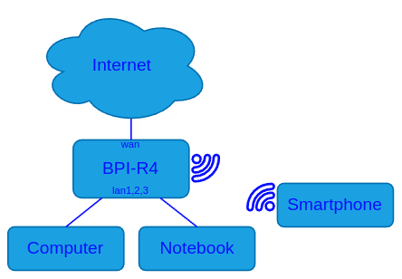

NixOS Router: Banana PI R4¶
Der Banana Pi R4 ist ein leistungsfähiges und dabei preislich sehr attraktives Netzwerkgerät, das speziell für anspruchsvolle Anwendungen entwickelt wurde. Ausgestattet mit dem MediaTek MT7988 SoC und bis zu 8 GB DDR4-RAM bietet er eine starke Grundlage für moderne Netzwerkinfrastrukturen. Besonders hervorzuheben sind die beiden integrierten SFP+ Schnittstellen, die High-Speed-Datenübertragungen mit bis zu 10 Gbit/s ermöglichen. Durch die Unterstützung von Wi-Fi 6, einem M.2-Steckplatz für NVMe- oder 5G-Module sowie vielseitigen GPIO-Pins ist der BPI-R4 äußerst flexibel und erweiterbar.
Verwendung als All-In-One Netzwerkgerät¶
Der Banana Pi R4 soll in meinem Heimnetz nicht nur die klassische Rolle eines Routers übernehmen, sondern sich als vielseitige All-in-One-Netzwerklösung beweisen. Neben grundlegenden Aufgaben wie Routing und Firewalling plane ich den Einsatz als NAT64-Gateway, um IPv6-only Clients den Zugriff auf IPv4-Dienste zu ermöglichen. Auch als Firewall mit Deep Packet Inspection und einem Intrusion Detection/Prevention System wird das Gerät zum zentralen Sicherheitsbaustein.
Für maximale Flexibilität bei der Konfiguration der Netzwerkschnittstellen setze ich auf ifstate, ein deklaratives Werkzeug zur Netzwerkkonfiguration. Die dynamische Routing-Komponente übernimmt FRR, während nftables als leistungsstarke Firewall-Engine fungiert. Zusätzlich experimentiere ich mit verschiedenen Layer-7-Firewalls und Suricata als IDS/IPS.
Auch Dienste wie Knot Resolver/DNS (als rekursiver/autoritativer DNS-Server), Kea für DHCPv4 und DHCPv6-PD, sowie radvd für SLAAC kommen zum Einsatz. Optional plane ich, Asterisk als VoIP-Telefonanlage zu betreiben, um eine vollständige IP-PBX bereitzustellen.
Abgerundet wird das ganze durch LLDP zur Nachbarschaftserkennung sowie diverse Prometheus Metrics Exporters für Monitoring-Zwecke. Ziel ist es, eine robuste, sichere und flexible Plattform zu schaffen, die alle zentralen Netzaufgaben in einem kompakten Gerät bündelt – und das auf Basis von NixOS, um alles deklarativ und reproduzierbar zu halten.
Verwandte Arbeiten¶
Für das Vorgängermodell, den Banana Pi R3, gibt es bereits eine größtenteils funktionale NixOS-Implementierungen. Siehe Router 2023: Part 1, Router 2023: Part 2, Beispielkonfiguration.
Mitte 2024 entwickelte sich aus dieser Beispielkonfiguration NixOS SBC - ein Modul explizit für Einplatinencomputer, welches auch die Unterstützung des BPI-R4 anstrebt.
Unabhängig davon Dokumentierten die Nutzer newAM und K900 ihre eigenen Fortschritte in separaten Git Repositores. Siehe: github:newAM/nixos-bpi-r4, gitlab:k900/nix
Beschaffung und Zusammenbau¶
Die Suche nach einem Anbieter, der die 8-GB-Variante des Banana Pi R4 inklusive Zubehör nach Deutschland liefert, erwies sich als herausfordernd. Letztendlich habe ich mich für folgenden Artikel entschieden: amazon.de/dp/B0F2HZSH3L. Abweichend zur Produktbeschreibung und den Abbildungen wurde anstatt eines US-Netzteils ein EU-Netzteil mitgeliefert.

Der Zusammenbau gestaltet sich dank der ausführlichen Anleitung unter docs.banana-pi.org/en/BPI-R4/BPI-R4_Accessory_installation äußerst einfach und problemlos.
Initialer Start mit vorinstalliertem OpeNWRT¶
Zwei DIP-Schalter erlauben die Auswahl des Bootmediums. Zunächst stellte ich diese auf die Position 01, um vom NAND-Chip zu booten. Auf meinem Board war dort OpenWRT in der Version 21.02 installiert. Der Bootlog kann auf https://felbinger.eu/attachments/bpi-r4-openwrt21-bootlog.txt betrachtet werden.
NixOS SBC¶
Bootstrap Image¶
Im Anschluss nutzte ich die folgenden Befehle, um das Bootstrap-Image von NixOS SBC auf die SD-Karte zu schreiben:
nix build github:nakato/nixos-sbc#sdImages.x86_64-linux.sdImage-bananapi-bpir4
zstd -d --stdout result/sd-image/nixos-sd-BananaPi-BPiR4-v0.3.raw.zst | sudo dd of=/dev/sdb bs=4M status=progress
Bereits aus den Logs (https://felbinger.eu/attachments/bpi-r4-nixos-sbc-bootlog.txt) kann
entnommen werden, dass anders als beim OpenWRT Image lediglich 4 GB RAM erkannt werden. Nach
dem Login mit den Initial-Zugangsdaten (Benutzername: root, Passwort: SBCDefaultBootstrapPassword)
bestätigte sich dies, sowie die Tatsache, dass das WLAN Modul noch nicht erkannt wurde.
Modifikationen¶
Der nächste Schritt war es, NixOS SBC so anzupassen, dass eine Veränderungen möglich waren.
Initialkonfiguration¶
Dazu wurde das Repository geklont und zunächst um eine Initialkonfiguration ähnlich der Konfiguration des Bootstrap Images zu erweitern. Dazu wurde die Flake wie folgt erweitert:
--- a/flake.nix
+++ b/flake.nix
@@ -59,6 +59,13 @@
sbc.bootstrap.initialBootstrapImage = true;
sbc.version = "0.3";
nixpkgs.hostPlatform.system = system;
+
+ nix.settings.experimental-features = ["nix-command" "flakes"];
+ services.openssh = {
+ enable = true;
+ settings.PermitRootLogin = "yes";
+ };
+ users.users.root.password = lib.mkForce "root";
}
]
++ (lib.optionals (device ? extraModules) device.extraModules)
Anschließend wurde eine neue SD Karte mit dem Image geflashed:
nix build .#sdImages.x86_64-linux.sdImage-bananapi-bpir4
zstd -d --stdout result/sd-image/nixos-sd-BananaPi-BPiR4-v0.3.raw.zst | sudo dd of=/dev/sdb bs=4M status=progress
Nachdem das System von dieser gestartet wurde, war feststellbar, dass das Passwort auf root gesetzt war und der SSH Login mit dem root-Nutzer möglich war.
8 GB RAM¶
Wie bereits beschrieben, konnte mithilfe des NixOS SBC Bootstrap-Image festgestellt werden, dass lediglich 4 GB Arbeitsspeicher erkannt wurde.
In einem Beitrag im Banana Pi Forum fand ich heraus, dass für die Nutzung von 8 GB RAM zwei Bedingungen erfüllt sein mussten. Zum einen muss die DRAM-Konfiguration (dram_configs.mk) eine AVAIL_DRAM_SIZE von 4096 haben, sodass die Einzelmodule korrekt erkannt werden. Außerdem muss, während des Kompilierens der ATF DDR4_4BG_MODE=1 gesetzt werden.
Innerhalb von NixOS SBC wird github:mtk-openwrt/arm-trusted-firmware in einer Version vom März 2025 eingesetzt. Betrachtet man die seit dem durchgeführten Änderungen, so ist erkennbar, dass Anfang Juli 2025 eine DRAM Konfiguration implementiert wurde.
Somit ist ein Update dieses Repositories in NixOS SBC nötig. Zusammengefasst ließ sich die Unterstützung der 8 GB RAM durch folgenden Patch implementieren:
--- a/pkgs/bananaPiR4/default.nix
+++ b/pkgs/bananaPiR4/default.nix
@@ -52,7 +52,7 @@
armTrustedFirmwareMT7988 =
(buildArmTrustedFirmware rec {
- extraMakeFlags = ["USE_MKIMAGE=1" "DRAM_USE_COMB=1" "BOOT_DEVICE=sdmmc" "bl2" "bl31"];
+ extraMakeFlags = ["USE_MKIMAGE=1" "DRAM_USE_COMB=1" "DDR4_4BG_MODE=1" "BOOT_DEVICE=sdmmc" "bl2" "bl31"];
platform = "mt7988";
extraMeta.platforms = ["aarch64-linux"];
filesToInstall = ["build/${platform}/release/bl2.img" "build/${platform}/release/bl31.bin"];
@@ -61,9 +61,9 @@
src = fetchFromGitHub {
owner = "mtk-openwrt";
repo = "arm-trusted-firmware";
- # mtksoc HEAD 2025-03-12
- rev = "e090770684e775711a624e68e0b28112227a4c38";
- hash = "sha256-VI5OB2nWdXUjkSuUXl/0yQN+/aJp9Jkt+hy7DlL+PMg=";
+ # mtksoc HEAD 2025-07-11
+ rev = "78a0dfd927bb00ce973a1f8eb4079df0f755887a";
+ hash = "sha256-m9ApkBVf0I11rNg68vxofGRJ+BcnlM6C+Zrn8TfMvbY=";
};
version = "2.12.0-mtk";
nativeBuildInputs = oldAttrs.nativeBuildInputs ++ [dtc ubootTools which python3];
Wireguard¶
Erst während des Einrichtungsprozesses stellte sich heraus, dass keine Wireguard-Interfaces erzeugt
werden konnten, da das entsprechende Kernel-Modul nicht gefunden wurde. Dieses Problem lässt sich
jedoch beheben, indem man die structuredExtraConfig anpasst und Wireguard als Kernelmodul hinzufügt:
--- a/pkgs/bananaPiR4/default.nix
+++ b/pkgs/bananaPiR4/default.nix
@@ -253,6 +253,30 @@
XFRM_USER = module;
NFT_XFRM = module;
+
+ ## WireGuard support ##
+ WIREGUARD = module;
+ WIREGUARD_DEBUG = no;
+
+ # Network dependencies
+ NET = yes;
+ INET = yes;
+ NET_UDP_TUNNEL = module;
+ NET_FOU = module;
+
+ # Crypto dependencies
+ CRYPTO = yes;
+ CRYPTO_BLKCIPHER = yes;
+ CRYPTO_BLAKE2S = module;
+ CRYPTO_CHACHA20 = module;
+ CRYPTO_CHACHA20_NEON = module;
+ CRYPTO_CURVE25519 = module;
+ CRYPTO_CURVE25519_NEON = module;
+ CRYPTO_CHACHA20POLY1305 = module;
+ CRYPTO_LIB_CHACHA20 = module;
+ CRYPTO_LIB_POLY1305 = module;
+ CRYPTO_LIB_CURVE25519 = module;
+ CRYPTO_LIB_CHACHA20POLY1305 = module;
};
argsOverride = {
WiFi Modul¶
tbd
Nutzung¶
Nachdem die vorerst notwendigen Modifikationen am System durchgeführt werden, kann dieses genutzt werden. Dafür werden die oben beschrieben Komponenten in NixOS deklarativ konfiguriert.
Initial Testphase¶
Planung: Für den ersten Testeinsatz des Systems wird ein einfaches Client-Netzwerk ohne komplexe Anforderungen angenommen. Dies ermöglicht eine grundlegende Überprüfung der Funktionalität und Leistungsfähigkeit des Systems.
Netzwerkdiagramm: 
Konfiguration: Im ersten Schritt wird lediglich eine Basiskonfiguration bestehend aus der ifstate-Schnittstellenkonfiguration, dem Knot Resolver als Recursive DNS Server, einem Kea DHCPv4 Server für das Client-Segment und einer einfachen Firewall mit NAT Funktionalitätdurchgeführt.
Konfiguration des Switching Chips in ifstate 2.0.0
{
networking.ifstate.settings.interfaces = {
"br-lan" = {
addresses = [ "192.168.178.1/24" ];
link = {
kind = "bridge";
state = "up";
};
};
lan1 = {
link = {
state = "up";
kind = "dsa";
link = "end0";
master = "br-lan";
};
};
lan2 = {
link = {
state = "up";
kind = "dsa";
link = "end0";
master = "br-lan";
};
};
lan3 = {
link = {
state = "up";
kind = "dsa";
link = "end0";
master = "br-lan";
};
};
};
}
Testen: Neben der IPv4 Adressvergabe mittels DHCP, dem DNS Recursor und der NAT wurde primär die Distributed Switch Architecture (DSA), also die korrekte Funktionalität des eingebauten Switching Chips getestet wurde. Hierfür kam das Tool iperf zum Einsatz, bei dem 10 GBit Netzwerktraffic zwischen Notebook und Computer mit einer Geschwindigkeit von 1 Gbit/s ohne wesentliche Belastung der CPU des Routers übertragen wurden. Das Ergebnis zeigte, dass der Switching-Chip wie erwartet funktioniert.
Fortsetzung folgt...